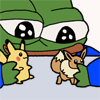
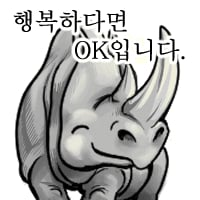

이제 봄
이제 봄
니가 좆간이 아닌 것과 같은 이유지
그래그래 나만 죽을 순 없지
다같이 오늘 한번 죽어보자
뿔이 왜팔렸는지알겠다
코끼리 오나홀 아니였냐,,
그 가젤처럼 으랏챠! 해서 암컷이 앞쪽으로 밀려나는거 예상했는데 ㅋㅋㅋ
Live Live
엄마 쟤는 다리사이에도 뿔이 있어
개씨발........그러네.. 이제 봤네... 이야....
나만 볼 순 없다.
크다잉

살다살다
살다살다




좆뿔소 ㄷㄷ

좆박소
빳빳하게 섰네...

어우 무슨 전봇대만한게
어흐어흐
코끼리 숫컷은 숫코뿔소에 냡다 박던데
존나크네 뿔
진짜임? ㅅㅂ 빠큐안하는거보면 ai는 아니네
시발 ㅋㅋㅋㅋㅋ
와따 크다잉 근데 뿌라지면 우짜노
세상 좋아졌어
내 똥꼬가 다 찌릿하네 ㄷㄷㄷㄷ
코끼리한테 강간당하는 영상도 가져와
정말 궁금했는데 이런 영상 올려주셔서 감사합니다.
근데 뿔 존나머싯다
왜 좆뿔소가아니라코뿔소지